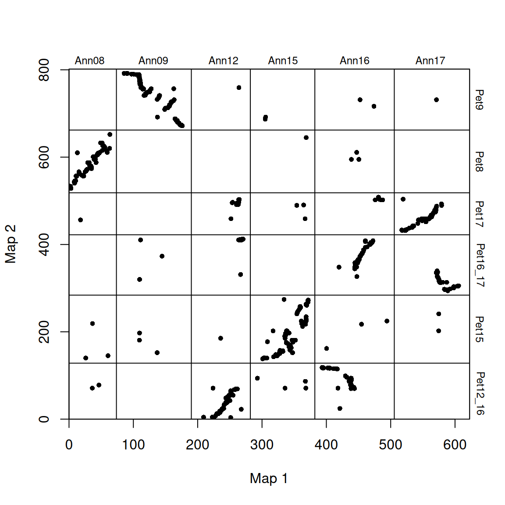
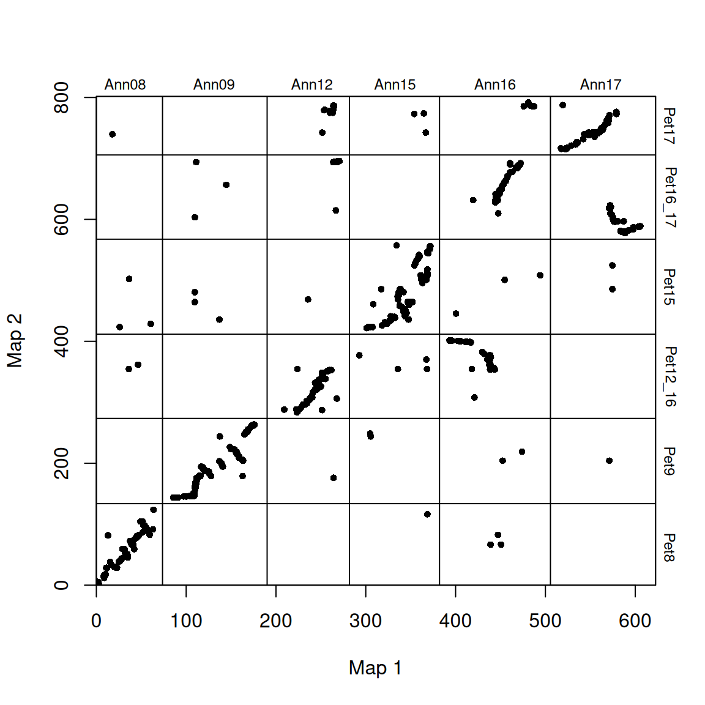
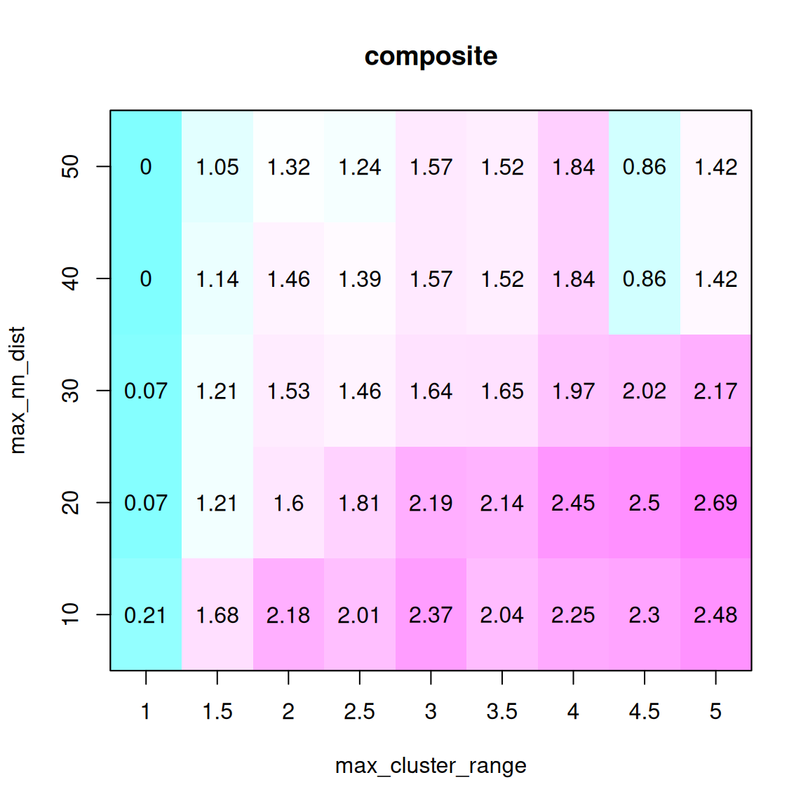
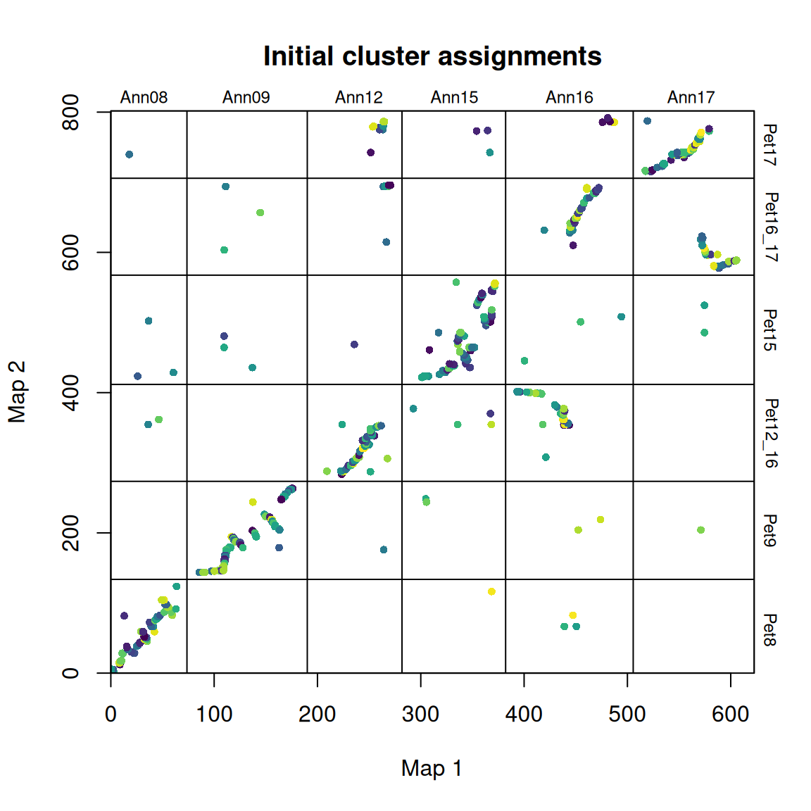
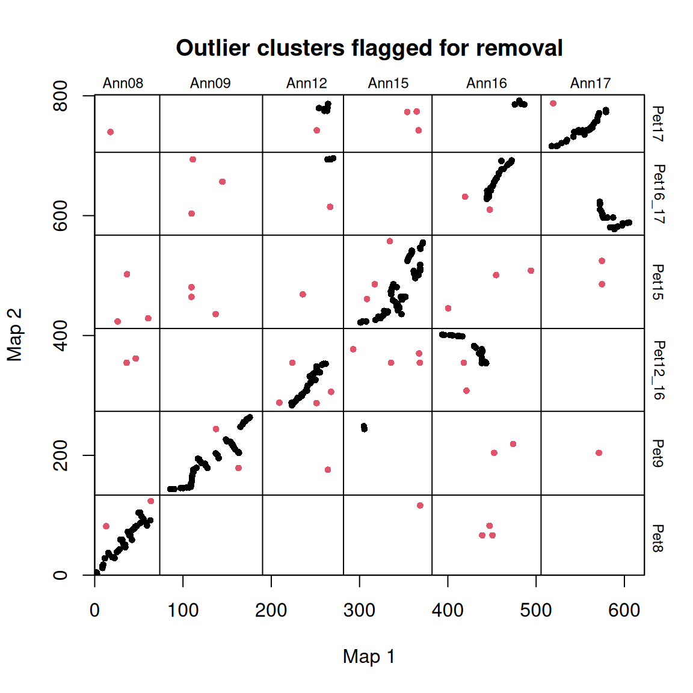
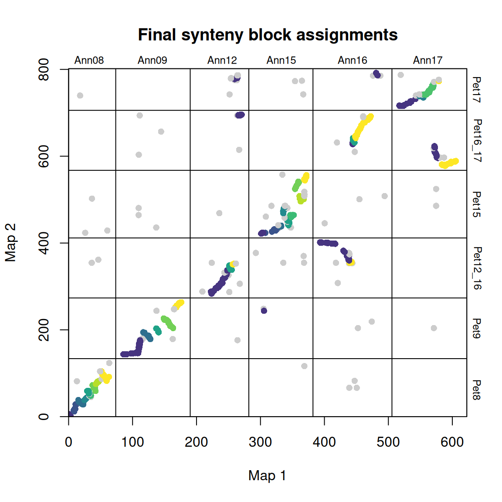
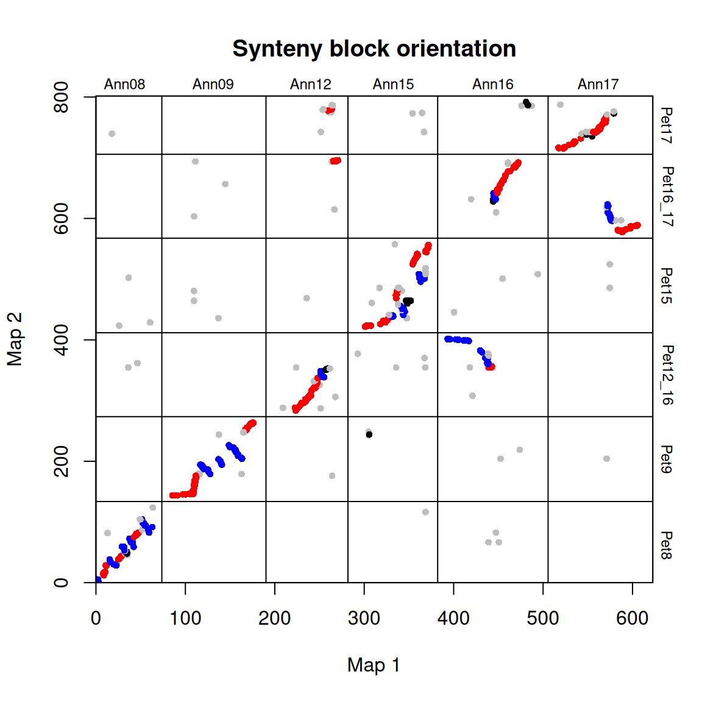
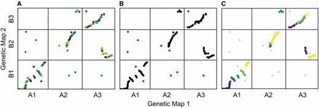

# 安装包
if (!requireNamespace("UpSetR", quietly = TRUE)) {
remotes::install_github("ksamuk/syntR")
}
# 加载包
library(syntR)共线性块图
示例
共线性被广泛应用于复杂基因组的研究。本教程将基于R包syntR，对识别两个遗传图谱之间共享的共线性区块、染色体重排和绘图进行总结。
环境配置
系统要求： 跨平台（Linux/MacOS/Windows）
编程语言：R
依赖包：
syntR;
sessioninfo::session_info("attached")─ Session info ───────────────────────────────────────────────────────────────
setting value
version R version 4.6.0 (2026-04-24)
os Ubuntu 24.04.4 LTS
system x86_64, linux-gnu
ui X11
language (EN)
collate C.UTF-8
ctype C.UTF-8
tz UTC
date 2026-05-05
pandoc 3.1.3 @ /usr/bin/ (via rmarkdown)
quarto 1.9.37 @ /usr/local/bin/quarto
─ Packages ───────────────────────────────────────────────────────────────────
package * version date (UTC) lib source
dplyr * 1.2.1 2026-04-03 [1] RSPM
intervals * 0.15.5 2024-08-23 [1] RSPM
magrittr * 2.0.5 2026-04-04 [1] RSPM
reshape2 * 1.4.5 2025-11-12 [1] RSPM
syntR * 1.0 2026-05-04 [1] Github (ksamuk/syntR@bce120c)
tidyr * 1.3.2 2025-12-19 [1] RSPM
viridis * 0.6.5 2024-01-29 [1] RSPM
viridisLite * 0.4.3 2026-02-04 [1] RSPM
[1] /home/runner/work/_temp/Library
[2] /opt/R/4.6.0/lib/R/site-library
[3] /opt/R/4.6.0/lib/R/library
* ── Packages attached to the search path.
──────────────────────────────────────────────────────────────────────────────数据准备
syntR 需要两个遗传图谱中的标记位置（每个标记的染色体和图谱位置）。在使用 syntR 之前，需要分别推断两个图谱中的标记顺序。在使用 syntR 绘图，先使用R/qtl、ASMap 和 Lep-MAP获得两个不同图谱中单个标记（如 SNP、微卫星等）的位置数据。也可用minimap2的比对结果转换为为类似的输入文件用于分析和绘图。
# 加载示例标记数据
data(ann_pet_map)
head(ann_pet_map) map1_name map1_chr map1_pos map2_name map2_chr map2_pos
1 HanXRQChr12_10463750 Ann12 23.33200 HanXRQChr12_10463750 Pet12_16 0.000000
2 HanXRQChr12_10463069 Ann12 23.33091 HanXRQChr12_10463069 Pet12_16 3.660274
3 HanXRQChr12_67274477 Ann12 51.14234 HanXRQChr12_67274477 Pet12_16 3.660274
4 HanXRQChr12_11545866 Ann12 25.01880 HanXRQChr12_11545866 Pet12_16 3.660274
5 HanXRQChr12_11545707 Ann12 25.01856 HanXRQChr12_11545707 Pet12_16 3.660274
6 HanXRQChr12_9937279 Ann12 22.47337 HanXRQChr12_9937279 Pet12_16 4.567248数据分位六列：
-
map1_name：标记的唯一标识符。在本例中，标记的命名是基于其在参考基因组中的位置（通过比对 GBS 读数确定）。 -
map1_chr：第一个图谱中标记所在的染色体编号。 -
map1_pos：第一个图谱中标记的位置（例如以 cM 为单位）。 -
map2_name：同上，但用于图谱 2。这些名称可能与 map1_names 相同，也可能不相同。 -
map2_chr：第二个图谱中标记所在的染色体编号。 -
map2_pos：第二个图谱中的标记的位置。
示例数据是通过比较两种蝴蝶 Helianthus petiolaris ssp. petiolaris 和 H. petiolaris ssp. fallax 的GBS数据产生的。首先加载标记数据(ann_pet_map)和map1的染色体长度列表(ann_chr_lengths)，并通过make_one_map 函数将其转化为一个包含三个元素的列表(标记数据，map1和map2之间染色体中断的位置):
# 读取 map1 的染色体长度列表
# 这是一个可选文件，用于定义最大长度
# 如果已知，则为每条染色体的长度（以 cM 为单位）
# 注意：当被比较的标记未覆盖整个图谱时，这很有用
data(ann_chr_lengths)
ann_chr_lengths map1_chr map1_max_chr_lengths
1 Ann08 63.68
2 Ann09 96.46
3 Ann12 71.68
4 Ann15 80.29
5 Ann16 103.49
6 Ann17 97.14# make_one_map 将所有标记放在一个尺度上
# 并在染色体之间添加填充
# 以辅助算法并实现可视化
map_list <- make_one_map(ann_pet_map, map1_max_chr_lengths = ann_chr_lengths)可视化
1. 调整图谱顺序
使用 plot_maps() 创建标记数据的基本点阵图：
# 调整图谱顺序
plot_maps(map_df = map_list[[1]], map1_chrom_breaks = map_list[[2]], map2_chrom_breaks = map_list[[3]])
染色体上标注了物种特有的名称，染色体断裂处用横竖线表示。
因为染色体是任意排序的(染色体没有固有顺序)，这些图看起来相当分散。为了提高可读性，可以重新排列物种 2 的染色体顺序，使其与物种 1 的顺序一致（沿 x 轴绘制）。还可以旋转任何 “完全颠倒”的染色体，使它们（按染色体比例）沿 1:1 线排列。
# 调整图谱顺序
map2_chr_order <- c("Pet8", "Pet9", "Pet12_16", "Pet15", "Pet16_17", "Pet17")
flip_chrs <- c("Pet9")
map_list <- make_one_map(ann_pet_map, map1_max_chr_lengths = ann_chr_lengths, map2_chr_order = map2_chr_order, flip_chrs = flip_chrs)
plot_maps(map_df = map_list[[1]], map1_chrom_breaks = map_list[[2]], map2_chrom_breaks = map_list[[3]])
2. 确定最佳翻转参数
syntR 算法的关键调整参数是 max_cluster_range（CR max），其次是 max_nn_dist（NN dist）。max_cluster_range 决定了标记群的最大大小，这些标记群将被折叠成一个单点以便进一步分析。它定义了聚类标记所能跨越的最大距离。max_cluster_range 的值越大，将有越多的标记集结成一个点。
max_nn_dist 决定哪些标记被视为异常值，并从进一步分析中剔除。在 max_nn_dist 范围内没有相邻标记的标记被视为异常值。max_nn_dist 值越大，被移除的标记越少。 找到这两个参数最佳组合的简单方法是拟合这两个参数的取值范围，并选择能使两个图谱的覆盖率（分配给同源区块的图谱百分比）最大化和离群值数量最小化的取值（下图中的 “综合”是这些指标的比例总和）。
选择最佳的CR max 和 NN dist 的方法：(1) 使用一系列参数组合运行 syntR；(2) 保存关于在同源区块中代表的每个图谱的遗传距离和每次运行保留的标记数的汇总统计；(3) 找到能最大化平均加权这三个测量值的复合统计的参数组合。在存在多个局部最大值的情况下，选择 CR max 值最小的局部最大值，以减少潜在假阳性的数量。
可以使用 max_cluster_range = 2 和 max_nn_dist = 10 的默认值跳过这一步。这一参数可能非常适合大多数遗传图谱。
# 寻找最佳参数组合
# 使用每个参数组合运行 find_synteny_blocks 并收集汇总统计数据
parameter_data <- test_parameters(map_list, max_cluster_range_list = seq(1, 5, by = 0.5), max_nn_dist_list = seq(10, 50, by = 10))
plot_summary_stats(parameter_data[[1]], "composite")
在本例中，选择 max_cluster_range 为 2， max_nn_dsit 为 10。
3. 识别同源区块
确定两个调整参数后，我们就可以运行 syntR 的主要功能：find_synteny_blocks。 该函数将一组标记数据（包含在我们之前创建的 map_list 对象中）通过 Ostevik 等人描述的算法进行错误检测和同源区块识别。 运行方法如下：
# 识别同源区块
synt_blocks <- find_synteny_blocks(map_list, max_cluster_range = 2, max_nn_dist = 10, plots = TRUE)


当 plots=TRUE 时，函数会生成三幅图，显示算法的进展情况。在第一幅图中，映射误差通过预聚类步骤进行平滑处理。接下来，异常值会被标记和移除。最后，通过 syntR 之友聚类算法确定同源区块。
find_synteny_blocks 输出一个包含五个数据框的列表对象：
# 打印 synt_blocks 的内容
lapply(synt_blocks, head)$marker_df
map1_name map1_chr map1_pos map1_posfull map2_name
1 HanXRQChr12_10463750 Ann12 23.33200 223.4720 HanXRQChr12_10463750
2 HanXRQChr12_10463069 Ann12 23.33091 223.4709 HanXRQChr12_10463069
3 HanXRQChr12_67274477 Ann12 51.14234 251.2823 HanXRQChr12_67274477
4 HanXRQChr12_11545866 Ann12 25.01880 225.1588 HanXRQChr12_11545866
5 HanXRQChr12_11545707 Ann12 25.01856 225.1586 HanXRQChr12_11545707
6 HanXRQChr12_9937279 Ann12 22.47337 222.6134 HanXRQChr12_9937279
map2_chr map2_pos map2_posfull cluster block final_block orientation
1 Pet12_16 0.000000 283.4780 1 2 2 positive
2 Pet12_16 3.660274 287.1382 2 2 2 positive
3 Pet12_16 3.660274 287.1382 3 <NA> NA outlier
4 Pet12_16 3.660274 287.1382 4 2 2 positive
5 Pet12_16 3.660274 287.1382 4 2 2 positive
6 Pet12_16 4.567248 288.0452 2 2 2 positive
$synteny_blocks_df
block map1_chr map1_start map1_end map2_chr map2_start map2_end
1 5 Ann08 0.307917 3.096819 Pet8 0.00000 5.872578
2 6 Ann08 7.970652 11.630196 Pet8 12.06862 28.437648
3 7 Ann08 15.356354 22.979486 Pet8 28.43765 38.207576
4 8 Ann08 24.903278 28.616233 Pet8 38.20758 43.602465
5 9 Ann08 32.578270 34.839079 Pet8 48.02882 50.686116
6 10 Ann08 29.056599 32.577711 Pet8 51.58404 59.123579
orientation
1 negative
2 positive
3 negative
4 positive
5 unclassified
6 negative
$map1_breaks
start end
1 3.096819 7.970652
2 11.630196 15.356354
3 22.979486 24.903278
4 28.616233 29.056599
5 32.577711 32.578270
6 34.839079 37.529721
$map2_breaks
start end
1 5.872578 12.06862
2 28.437648 28.43765
3 38.207576 38.20758
4 43.602465 48.02882
5 50.686116 51.58404
6 59.123579 59.12358
$summary_stats
num_blocks map1_coverage map2_coverage n_outliers
1 41 382.8091 567.0453 205这些要素是：
$marker_df数据框，包括标记原始列表及其同源区块分配。$synteny_blocks_df一个数据框，概括了每张地图中每个同源区块的跨度（以地图单元为单位），以及具有充分方向性证据的同源区块的推断方向（并列、倒置等）。$map1_breaks一个数据框，列出了 map1 中合成组块之间的断点。$map2_breaks一个数据框，列出了 map2 中合成组块之间的断点。$summary_stats总结算法结果（覆盖率等）的数据框
可以如下图所示绘制出图块的方向：
# 绘制出图块的方向
synt_blocks[[1]] %>%
plot_maps(map_list[[2]], map_list[[3]], col = c("blue", "grey", "red", "black")[as.numeric(as.factor(.$orientation))],
main = "Synteny block orientation", cex_val = 0.75)
在这种情况下，蓝色 = 倒置，红色 = 同线，灰色/黑色 = 未分类。
应用场景

参考文献
[1] Ostevik, Kate L., Kieran Samuk, and Loren H. Rieseberg. “Ancestral reconstruction of karyotypes reveals an exceptional rate of nonrandom chromosomal evolution in sunflower.” Genetics 214, no. 4 (2020): 1031-1045.